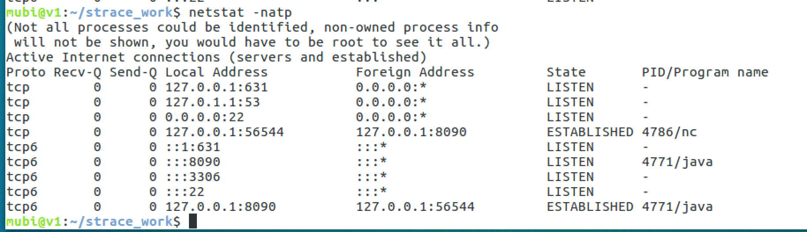
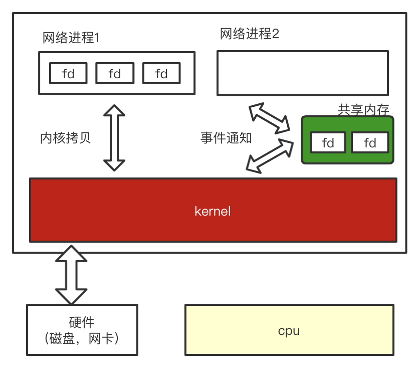

[TOC]
从nio到epoll
BIO实践
BIO Server & 系统调用
服务端监听8090端口，每一个客户端用一个线程处理，不断的获取客户端的输入数据并打印
import java.io.BufferedReader;
import java.io.InputStream;
import java.io.InputStreamReader;
import java.net.ServerSocket;
import java.net.Socket;
/**
* @Author mubi
* @Date 2020/6/25 18:54
*/
public class TestSocket {
public static void main(String[] args) throws Exception{
ServerSocket serverSocket = new ServerSocket(8090);
System.out.println("step1 new ServerSocket(8090)");
while(true){
final Socket client = serverSocket.accept();
System.out.println("step2 client:" + client.getPort());
new Thread(()->{
try{
InputStream in = client.getInputStream();
BufferedReader bufferedReader = new BufferedReader(new InputStreamReader(in));
while (true){
System.out.println(bufferedReader.readLine());
}
}catch (Exception e){
e.printStackTrace();
}
}).start();
}
}
}
nc命令去连接服务端
nc localhost 8090
strace命令追踪系统调用
javac TestSocket.java
strace -ff -o ./stracefile java TestSocket
ServerSocket启动过程
- socket系统调用, 得到文件描述符,如 fd5
- bind端口
- listen，文件描述符
- accept(阻塞状态), 有客户端连接得到新的socket, 产生文件描述符 如 fd6，fd7


- 小知识：通过进程ID号能知道有多少个线程(linux的
/proc/<pid>/task目录下)

补充：linux创建线程是clone系统调用，在主线程的stracefile中可以看到
clone(child_stack=0x7fd8d8508ff0, flags=CLONE_VM|CLONE_FS|CLONE_FILES|CLONE_SIGHAND|CLONE_THREAD|CLONE_SYSVSEM|CLONE_SETTLS|CLONE_ PARENT_SETTID|CLONE_CHILD_CLEARTID, parent_tidptr=0x7fd8d85099d0, tls=0x7fd8d8509700, child_tidptr=0x7fd8d85099d0) = 4787
netstat查看tcp相关
有Listen,ESTABLISHED状态的TCP

文件描述符的查看
在工作目录会看到很多stracefile,以.线程id结尾；本地起的56544端口的客户端连接，vim stracefile.4772(4772是服务端开启的主线程)，可以找到accept语句
accept(5, {sa_family=AF_INET6, sin6_port=htons(56544), inet_pton(AF_INET6, "::ffff:127.0.0.1", &sin6_addr), sin6_flowinfo=0, sin6_scope_id=0}, [28]) = 6
fcntl(6, F_GETFL) = 0x2 (flags O_RDWR)
fcntl(6, F_SETFL, O_RDWR) = 0
lseek(3, 62493071, SEEK_SET) = 62493071
read(3, "PK\3\4\n\0\0\10\0\0000\211|L9\267\215\270R\6\0\0R\6\0\0;\0\0\0", 30) = 30
lseek(3, 62493160, SEEK_SET) = 62493160
read(3, "\312\376\272\276\0\0\0004\0:\7\0!\n\0\v\0\"\t\0\10\0#\n\0\1\0$\t\0\v\0"..., 1618) = 1618
write(1, "step2 client:56544", 18) = 18
man 2 accept了解到 accept 的返回：系统会产生一个文件描述符，关联接收到的socket文件
RETURN VALUE
On success, these system calls return a nonnegative integer that is a descriptor for the accepted socket. On error, -1 is returned, and errno is set appropriately.
从上可以看出是文件描述符6的一个文件,即代表了连接上的一个客户端socket(在/proc/<pid>/fd目录下可见,pid为Java程序进程ID，本地同jps命令看到的程序运行ID)：

- strace给客户端起的线程，会阻塞在
recvfrom接收数据上(查看上文clone产生的线程tid=4787),vim stracefile.4787可以看到阻塞在recvfrom(6,上，即阻塞在read客户端socket fd上
set_robust_list(0x7fd8d85099e0, 24) = 0
gettid() = 4787
rt_sigprocmask(SIG_BLOCK, NULL, [QUIT], 8) = 0
rt_sigprocmask(SIG_UNBLOCK, [HUP INT ILL BUS FPE SEGV USR2 TERM], NULL, 8) = 0
rt_sigprocmask(SIG_BLOCK, [QUIT], NULL, 8) = 0
futex(0x7fd8f000b354, FUTEX_WAKE_OP_PRIVATE, 1, 1, 0x7fd8f000b350, {FUTEX_OP_SET, 0, FUTEX_OP_CMP_GT, 1}) = 1
futex(0x7fd8f000b328, FUTEX_WAKE_PRIVATE, 1) = 1
sched_getaffinity(4787, 32, [1, 0, 0, 0, 0, 145, 0, 0, 0, 0, 0, 0, 0, 0, 0, 0, 0, 0, 0, 0, 0, 0, 0, 0, 0, 0, 0, 0, 0, 0, 0, 0]) = 32
sched_getaffinity(4787, 32, [1, 0, 0, 0, 0, 145, 0, 0, 0, 0, 0, 0, 0, 0, 0, 0, 0, 0, 0, 0, 0, 0, 0, 0, 0, 0, 0, 0, 0, 0, 0, 0]) = 32
(0x7fd8d8409000, 12288, PROT_READ|PROT_WRITE, MAP_PRIVATE|MAP_FIXED|MAP_ANONYMOUS, -1, 0) = 0x7fd8d8409000
mprotect(0x7fd8d8409000, 12288, PROT_NONE) = 0
lseek(3, 30054856, SEEK_SET) = 30054856
read(3, "PK\3\4\n\0\0\10\0\0006\211|L\24w\0067E\3\0\0E\3\0\0\27\0\0\0", 30) = 30
lseek(3, 30054909, SEEK_SET) = 30054909
read(3, "\312\376\272\276\0\0\0004\0-\t\0\6\0\34\n\0\7\0\35\t\0\32\0\36\n\0\37\0\33\n\0"..., 837) = 837
lseek(3, 30056639, SEEK_SET) = 30056639
read(3, "PK\3\4\n\0\0\10\0\0B\211|L\305SF\t\265\r\0\0\265\r\0\0 \0\0\0", 30) = 30
lseek(3, 30056701, SEEK_SET) = 30056701
read(3, "\312\376\272\276\0\0\0004\0\242\n\0Y\0Z\n\0-\0[\t\0,\0\\\t\0,\0]\t\0"..., 3509) = 3509
recvfrom(6, "helloABC\n", 8192, 0, NULL, NULL) = 9
ioctl(6, FIONREAD, [0]) = 0
write(1, "helloABC", 8) = 8
write(1, "\n", 1) = 1
recvfrom(6,
拷贝，遍历fd的问题? (多路复用引入)
- 线程开销大（线程多，单核需要切换线程）
- 资源开销大，线程栈消耗内存；系统调用多
C10K问题: 用户空间需要遍历n个socket fd，然后再切换到内核空间，内核进行系统调用检查fd，但实际上可能只有m(m << n)个fd是准备好数据的；
- fd拷贝到内核复杂度是
O(n)，会发生O(n)次系统调用 - 内核检查fd是否准备好的复杂度是
O(n)
多路复用概念
IO多路复用是一种同步IO模型，实现一个线程可以监视多个文件句柄；一旦某个文件句柄就绪，就能够通知应用程序进行相应的读写操作；没有文件句柄就绪时会阻塞应用程序，交出cpu。多路是指网络连接，复用指的是同一个线程
select/poll
BIO的问题解决,可以把所有fd放到一个集合(select)中，一次性的拷贝到内核处理，那么复杂度：
- fd拷贝到内核复杂度是
O(1),一次系统调用，文件描述符全部交给内核（多路复用） - 内核去检查所有fd(遍历所有fd)是否准备好的复杂度仍然是
O(n)

select的问题?
- 虽然每次只进行一次fd集合拷贝到内核，但注意到每次传递都差不多是同样的fd集合
- 内核仍然是需要遍历所有fd去检查其是否准备好数据的，但实际上可能只有
m(m << n)个fd是准备好数据的，遍历仍然很慢；
epoll
在内核区域开辟一块共享区域，有一个
fd就加入进去，不用拷贝了；随着fd的增多，这个集合也增多了；不像select那样，每次传递重复的fd集合不需要遍历所有
fd，基于事件驱动（中断），哪个fd准备好了，就发出通知事件，这些事件放到一个事件区域中，用户态自己去等待其中的事件 (网卡会发出硬中断，CPU读到网卡数据，写入到epoll中内核的事件区域（基于事件）)无需fd拷贝到内核
- 内核检查fd是否准备好,采用事件通知方式

epoll 三个函数
epoll_create
int epoll_create(int size)
创建一个epoll句柄，参数size用来告诉内核监听的数目，size为epoll所支持的最大句柄数,返回一个fd表示该内核空间
epoll_ctl
int epoll_ctl(int epfd, int op, int fd, struct epoll_event *event)
函数功能：用于控制某个文件描述符上的事件，可以注册事件，修改事件，删除事件。
参数epfd为epoll的句柄，即 epoll_create 函数返回值
参数op表示动作，用3个宏来表示：
EPOLL_CTL_ADD(注册新的fd到epfd)，
EPOLL_CTL_MOD(修改已经注册的fd的监听事件)，
EPOLL_CTL_DEL(从epfd删除一个fd)；
参数fd为需要监听的标示符；
参数event告诉内核需要监听的事件
epoll_wait
int epoll_wait(int epfd, struct epoll_event * events, int maxevents, int timeout)
该函数用于轮询I/O事件的发生；
epfd: 由epoll_create生成的epoll专用的文件描述符；
epoll_event: 用于回传代处理事件的数组；
maxevents: 每次能处理的事件数；
timeout: 等待I/O事件发生的超时值（ms）；-1永不超时，直到有事件产生才触发，0立即返回。
该函数返回发生事件数。-1有错误。
- man epoll_wait
DESCRIPTION
The epoll_wait() system call waits for events on the epoll(7) instance
referred to by the file descriptor epfd. The memory area pointed to by
events will contain the events that will be available for the caller.
Up to maxevents are returned by epoll_wait(). The maxevents argument
must be greater than zero.
I/O存储金字塔

附：Linux相关操作
man命令的使用
- 是普通的命令
- 是系统调用,如open,write之类的(通过这个，至少可以很方便的查到调用这个函数，需要加什么头文件)
- 是库函数,如printf,fread
- 是特殊文件,也就是/dev下的各种设备文件
- 是指文件的格式,比如passwd, 就会说明这个文件中各个字段的含义
- 是给游戏留的,由各个游戏自己定义
- 是附件还有一些变量,比如向environ这种全局变量在这里就有说明
- 是系统管理用的命令,
eg:
man 2 accept
man 2 socket
nc命令
nc命令的作用
实现任意
TCP或UDP端口的侦听，nc可以作为server以TCP或UDP方式侦听指定端口- 端口的扫描，nc可以作为client发起
TCP或UDP连接 - 机器之间传输文件
- 机器之间的网络测速
nc [-hlnruz][-g<网关...>][-G<指向器数目>][-i<延迟秒数>][-o<输出文件>][-p<通信端口>][-s<来源位址>][-v...][-w<超时秒数>][主机名称][通信端口...]
strace命令
trace system calls and signals(可用于诊断、调试和教学的Linux用户空间跟踪器。我们用它来监控用户空间进程和内核的交互，比如系统调用、信号传递、进程状态变更等。)
man strace
linux 相关文件描述符
ulimit -n
查看用户级文件描述符的限制，一般：1024
查看系统级别限制
sysctl -a | grep file-max
sysctl: fs.file-max = 100262
cat /proc/sys/fs/file-max
100262
输入/输出/错误描述符
- 0：标准输入（stdin），通常对应终端的键盘
- 1：标准输出（stdout），通常对应终端的屏幕，如stracefile中的
write(1, "step1 new ServerSocket(8090)", 28) = 28 - 2：标准错误（stderr），通常对应终端的屏幕